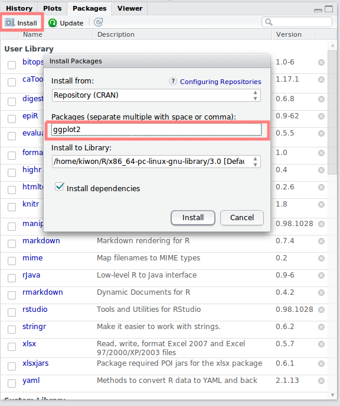
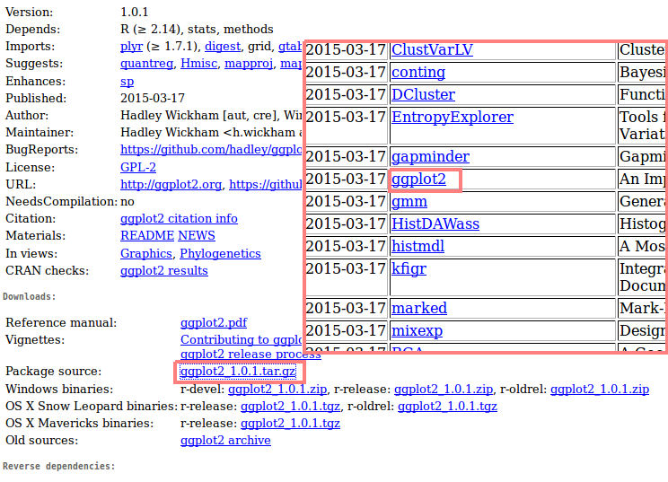
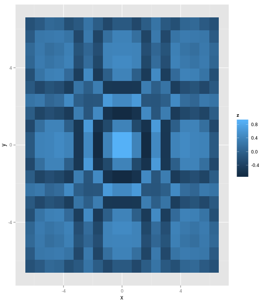

사용가능한 패키지는 CRAN(Comprehensive R Archive Network)에서 확인 할 수 있다.
RStudio에의 Packages 탭에서 Install을 클릭하면 Install Packages 창이 나타난다. Packages 칸에 원하는 패키지를 입력하고 Install을 클릭하면 기본 경로에 패키지가 설치된다.

CRAN 홈페이지에서 원하는 패키지를 클릭하면 Package source를 다운받을 수 있다. 다운받은 후 패키지 기본 위치에 압축을 풀어 저장할 수 있다.

> .libPaths() [1] "/home/kiwon/R/x86_64-pc-linux-gnu-library/3.0" [2] "/usr/local/lib/R/site-library" [3] "/usr/lib/R/site-library" [4] "/usr/lib/R/library"
> installed.packages() Package LibPath Version Priority Depends bitops "bitops" "/home/kiwon/R/x86_64-pc-linux-gnu-library/3.0" "1.0-6" NA NA caTools "caTools" "/home/kiwon/R/x86_64-pc-linux-gnu-library/3.0" "1.17.1" NA "R (>= 2.2.0)" colorspace "colorspace" "/home/kiwon/R/x86_64-pc-linux-gnu-library/3.0" "1.2-6" NA "R (>= 2.13.0), methods" dichromat "dichromat" "/home/kiwon/R/x86_64-pc-linux-gnu-library/3.0" "2.0-0" NA "R (>= 2.10), stats" digest "digest" "/home/kiwon/R/x86_64-pc-linux-gnu-library/3.0" "0.6.8" NA "R (>= 2.4.1)" epiR "epiR" "/home/kiwon/R/x86_64-pc-linux-gnu-library/3.0" "0.9-62" NA "R (>= 3.0.0), survival" evaluate "evaluate" "/home/kiwon/R/x86_64-pc-linux-gnu-library/3.0" "0.5.5" NA "R (>= 2.14.0)" formatR "formatR" "/home/kiwon/R/x86_64-pc-linux-gnu-library/3.0" "1.0" NA NA ggplot2 "ggplot2" "/home/kiwon/R/x86_64-pc-linux-gnu-library/3.0" "1.0.1" NA "R (>= 2.14), stats, methods" gtable "gtable" "/home/kiwon/R/x86_64-pc-linux-gnu-library/3.0" "0.1.2" NA "R (>= 2.14), grid" highr "highr" "/home/kiwon/R/x86_64-pc-linux-gnu-library/3.0" "0.4" NA NA htmltools "htmltools" "/home/kiwon/R/x86_64-pc-linux-gnu-library/3.0" "0.2.6" NA "R (>= 2.14.1)" knitr "knitr" "/home/kiwon/R/x86_64-pc-linux-gnu-library/3.0" "1.8" NA "R (>= 2.14.1)" ...
.libPaths( "~/Copy/R/lib")
> install.packages("mvtnorm","~/Copy/R/lib")
> library(MASS) # loading MASS package > require(MASS) # loading MASS package
> library(help=MPSS)
그래픽 구현 패키지 [cran]
library(ggplot2)
pp <- function (n,r=4) { x <- seq(-r*pi, r*pi, len=n)
df <- expand.grid(x=x, y=x)
df$r <- sqrt(df$x^2 + df$y^2)
df$z <- cos(df$r^2)*exp(-df$r/6)
df }
qplot(x, y, data = pp(20, 2), fill=z, geom="raster")

데이터 구현 기능 패키지. [cran]
# install.packages("plyr") #run this if you don't have the package already
library(plyr)
#make some example data
dd<-data.frame(matrix(rnorm(216),72,3),c(rep("A",24),rep("B",24),rep("C",24)),c(rep("J",36),rep("K",36)))
colnames(dd) <- c("v1", "v2", "v3", "dim1", "dim2")
#ddply is the plyr function
ddply(dd, c("dim1","dim2"), function(df)mean(df$v1))
> ddply(dd, c("dim1","dim2"), function(df)mean(df$v1))
dim1 dim2 V1
1 A J -0.31256496
2 B J -0.09514053
3 B K -0.19273687
4 C K -0.03500908
Sring 데이터 (문자열 데이터) 기능 패키지. [cran]
# String Extract
shopping_list <- c("Show", "flow", "Sugar", "milk")
str_extract(shopping_list, "[A-Z].*")
str_extract(shopping_list, "[a-z]{1,3}")
str_extract(shopping_list, "\\b[a-z]{1,4}\\b")
# String Split
fruits <- c(
"apples and oranges and pears and bananas",
"pineapples and mangos and guavas"
)
str_split(fruits, " and ")
str_split(fruits, " and ", n = 3) # Specify n to restrict the number of possible matches
str_split(fruits, " and ", n = 2)
str_split(fruits, " and ", n = 5) # If n greater than number of pieces, no padding occurs
> # String Extract
> shopping_list <- c("Show", "flow", "Sugar", "milk")
> str_extract(shopping_list, "[A-Z].*")
[1] "Show" NA "Sugar" NA
> str_extract(shopping_list, "[a-z]{1,3}")
[1] "how" "flo" "uga" "mil"
> str_extract(shopping_list, "\\b[a-z]{1,4}\\b")
[1] NA "flow" NA "milk"
> str_split(fruits, " and ")
[[1]]
[1] "apples" "oranges" "pears" "bananas"
[[2]]
[1] "pineapples" "mangos" "guavas"
> str_split(fruits, " and ", n = 3)
[[1]]
[1] "apples" "oranges" "pears and bananas"
[[2]]
[1] "pineapples" "mangos" "guavas"
> str_split(fruits, " and ", n = 2)
[[1]]
[1] "apples" "oranges and pears and bananas"
[[2]]
[1] "pineapples" "mangos and guavas"
> str_split(fruits, " and ", n = 5)
[[1]]
[1] "apples" "oranges" "pears" "bananas"
[[2]]
[1] "pineapples" "mangos" "guavas"